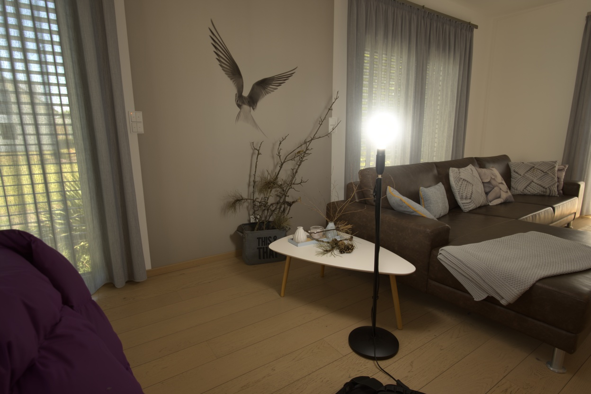
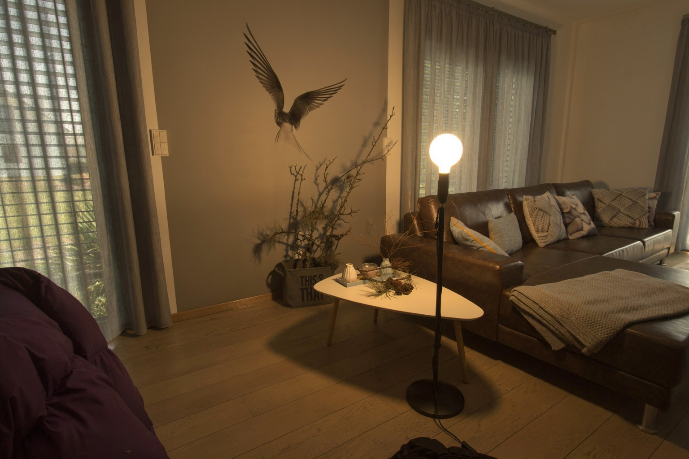
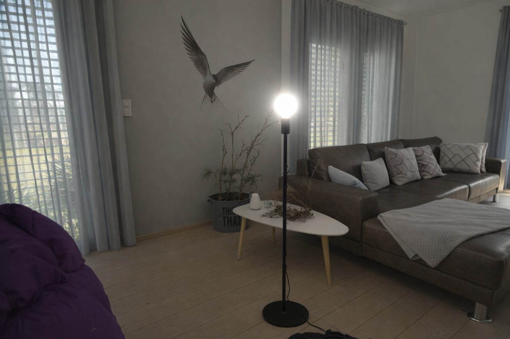
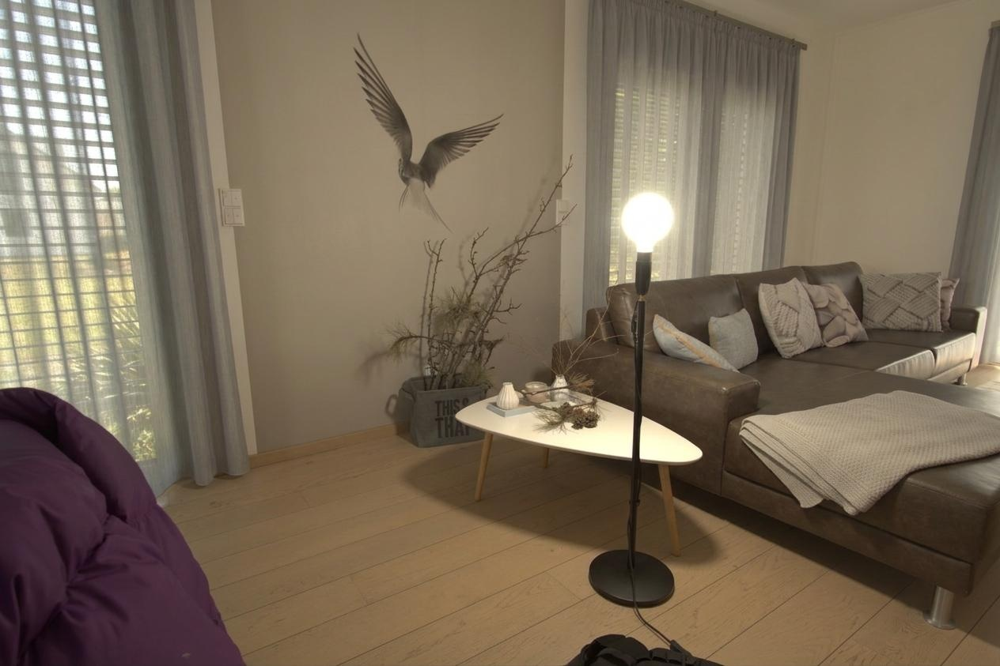
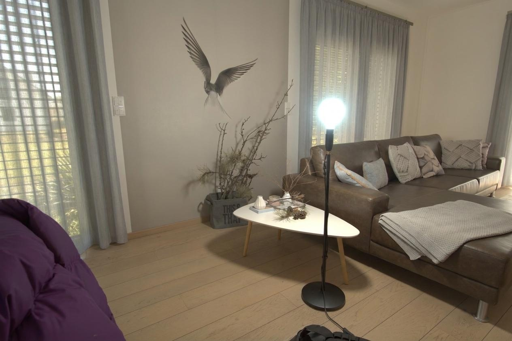
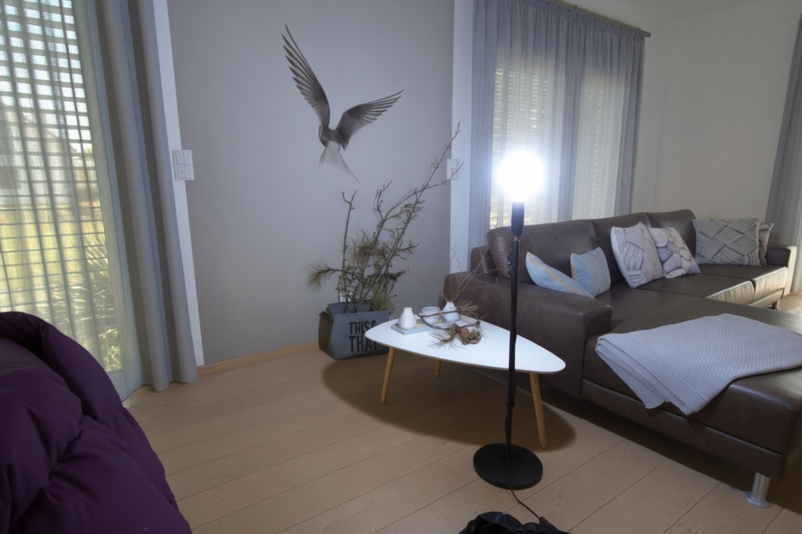
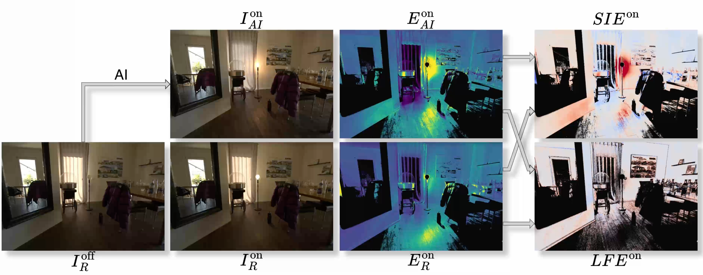
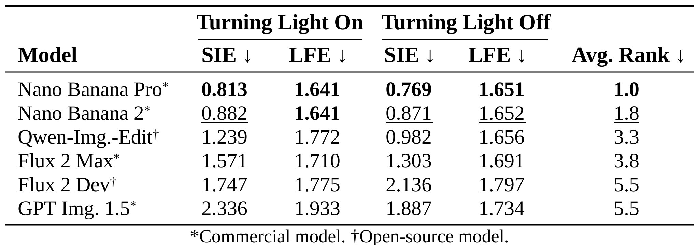

Do Image Editing Models Understand Lighting?






Click to reveal
Click to reset






While recent advancements in generative image editing models have achieved stunning visual fidelity, it remains an open question whether these systems possess an intrinsic knowledge of real-world lighting. Existing benchmarks typically evaluate high-level plausibility of perceptual light transport on curated internet imagery, using VLMs or human judgement, or they rely on synthetically generated datasets. In this work, we introduce the 3D-anchored Light Probe (3DLP) benchmark, for which we have captured a new high-fidelity HDR dataset of real-world lighting changes. The dataset consists of 1K image pairs of diverse indoor scenery in which light probes are physically turned on and off. To allow for a granular performance analysis, we annotated specific image regions such as cast shadows or metallic surfaces. With this data, we evaluate a range of state-of-the-art image editing models by measuring how well their light probe edits align with reality. The evaluation uses two new scores to compensate for AI-generated photographic effects, such as adjusted white balance. Our results show that the overall performance of models differs considerably, with differences slightly less pronounced for specular highlights. The best image editing models are remarkably consistent with real-world physics, however, they still leave room for improvement. We observe that image regions that receive less light from the light probe are more prone to errors for all models. Furthermore, building on their success in evaluating macroscopic lighting plausibility, we test VLMs on our task but find that they are unsuitable for pixel-level light transport analysis. We will make the benchmark, together with the real-world dataset, publicly available to encourage future research on this topic.

Illustration of the turn-on task.
Isolating light transport. Starting from a real image with the light probe turned off, IoffR, the editing model is asked to turn on the visible bulb and produce IonAI. We compare this prediction to the real capture with the bulb turned on, IonR, by dividing each on-image by the shared off-image. The resulting ratio images, EonAI and EonR, isolate the illumination change caused by the bulb while reducing the influence of scene texture and appearance.
Evaluating the lighting edit. We evaluate the ratio images with two complementary errors. The Standardised Intensity Error (SIE) measures where the predicted light energy contribution is too weak or too strong, while the Low-Frequency Error (LFE) compares gradients and focuses on effects such as light falloff and lambertian shading. Invalid regions such as clipped pixels, low-signal areas, and window labels are masked out. Both metrics are designed to be robust to photographic changes introduced by the editing model, including exposure shifts and differences in the rendered bulb color or brightness.
This table reports results on our 3DLP benchmark, evaluating how accurately image editing models reproduce real-world lighting changes when a light probe is turned on or off.

Lower scores indicate closer agreement with the real lighting change. Nano Banana Pro achieves the best overall rank and leads on all reported SIE/LFE scores, while Nano Banana 2 follows closely. Among open-source models, Qwen-Image-Edit performs strongest, and the larger spread in SIE compared to LFE suggests that models differ more in reproduced light intensity than in low-frequency shading structure.
SIE/LFE metric images: red = too high, blue = too low compared to the real reference.
@misc{küchler2026imageeditingmodelsunderstand,
title={Do Image Editing Models Understand Lighting?},
author={Tim Küchler and Johann-Friedrich Feiden and Matthias Nießner and Carsten Rother},
year={2026},
eprint={2606.26738},
archivePrefix={arXiv},
primaryClass={cs.CV},
url={https://arxiv.org/abs/2606.26738}
}